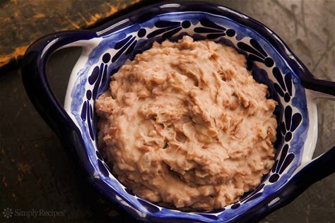
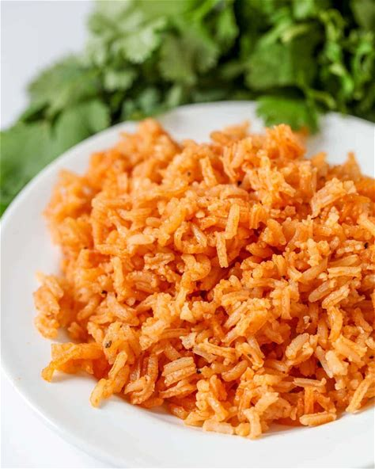

Enchiladas

Description
This is a wonderful beed enchiladas recipe that will melt your mouth away
It is the best of tex mex!!
Ingredients
- 1 pound lean ground beef
- 1 small onion, chopped
- 1 (1.5 ounce) package dry enchilada sauce mix
- 10 (10 inch) flour tortillas
- 2 cups shredded Cheddar cheese, divided
- 1 (2.25 ounce) can sliced black olives, drained
Steps
- Preheat the oven to 350 degrees F (175 degrees C).
- Cook ground beef and onion in a medium skillet over medium-high heat until beef is evenly browned and onion is tender.
- Prepare enchilada sauce according to package directions. Pour 1/4 cup of the sauce into the bottom of a 9x13-inch baking dish.
- Place an equal portion of the ground beef mixture and about 1 ounce of Cheddar cheese on each flour tortilla, reserving at least 1/2 cup of cheese. Then tightly roll the tortillas.
- Place rolled tortillas seam side down in the baking dish.
- Pour remaining sauce over the top of the enchiladas and sprinkle with remaining cheese and olives.
- Bake in the preheated oven until the sauce is bubbly and cheese is thoroughly melted, about 20 minutes.
- Garnish to taste and serve with your favorite side. Enjoy!
Refried Beans

Description
A side of refried beans!
Which always go awesome with some beef enchiladas and rice
Ingredients
- 2 1/2 cups dry pinto beans
- Water
- 2 tsp Salt
- 2 tsp dried Oregano
- 1 onion, halved
- 2 tbsp bacon fat or extra virgin olive oil
- 1/2 cup bean cooking liquid or water
- 1/2 tsp chipolte powder, optional
- Crumbled cotija cheese or grated cheddar cheese, optional
Steps
- Rinse the dry beans
- Cook the beans on the stove top or pressure cooker
- Add half on onion to beans
- Add salt to beans
- Add oregano to beans
- Sautee the onions in fat
- Add the beans, mash them in the pan
- Add water and seasoning
Spanish Rice

Description
A side of spanish rice to go with your enchilads and beans!
A tasty spanish rice recipe for your meals
Ingredients
- 2 cups long grain rice
- 1/8 cup vegetable oil
- 8 oz tomato sauce
- 6 stems cilantro
- 1 tsp salt
- 1 tsp minced garlic
- 4 cups of water
- 1 cube of chicken flavored bouillon
- Dash cumin
- Dash garlic pepper
Steps
- heat oil in large frying pan on medium heat
- Add rice and cook until golden brown
- Add 1 chicken flavored bouillon cube to 4 cups of water and microwave for 3 minutes
- When rice is brown, add water, tomato sauce, salt, garlic, cumin and garlic pepper to pan
- Stir and cover pan. Let simmer for 30-40 minutes or until all is cooked and there is no liquid left. Fluff before serving and Enjoy.